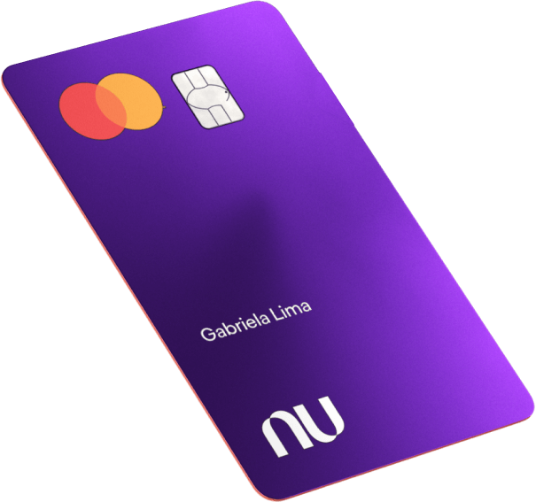
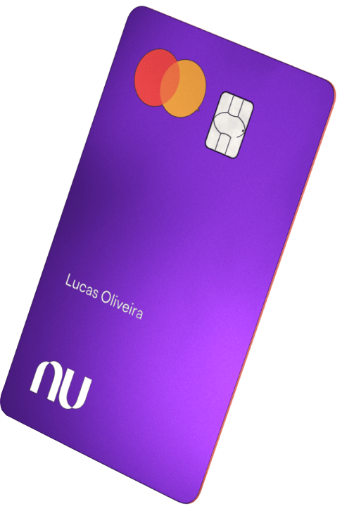

Página inicial
Para você
Para o seu negócio
O Nubank
Perguntas
Fazer login
O futuro é a razão que a gente faz
planos.
Escolha o futuro. Comece a controlar melhor sua vida financeira com o Nubank.
 